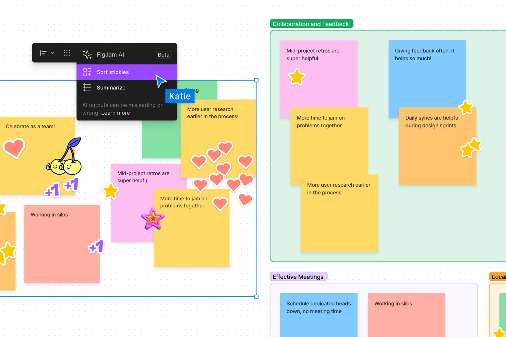

The future of frontend development

🥊 Introduction:
The environment of front-end development is changing dramatically, thanks to technological developments, artificial intelligence (AI), and the growth of no-code/low-code platforms.
So let's look at the changing trends and examine the future of frontend development.
🤖 Machine Learning (AI):

One popular concern in the technology world is whether artificial intelligence (AI) will replace frontend developers over the next decade.
The truth is that AI cannot replace human intelligence, but rather revolutionizes the way humans operate.
“If AI can do most jobs better than humans, we need to figure out how to share those resources so everyone has a good life.”
Sam Altman – CEO of OpenAI
AI-powered automation will handle regular jobs, freeing up developer's time for more complicated, high-level tasks and innovative projects.
As AI grows, front-end developers are encouraged to adapt and improve their skill sets in order to work effectively with AI tools and technologies.
😨 Concerns About Losing Your Job:
While AI and automation are expected to impact certain aspects of front-end development, the fear of job displacement is largely unfounded.
AI is a tool, and its effectiveness depends on the person using it. Developers who adopt AI and make the most of its potential will be at the new wave of innovation, guaranteeing a stable and dynamic career.
“AI won't take your job, a person using AI will”
- Anonymous
🪴📈 Job Outlook and Opportunities:
The job outlook for front-end developers is promising.
Let's look at some examples:
According to Zippia, here are some average salaries for front-end developers based on their job titles in the USA:
- Mobile Applications Developer: $99,257
- Web Application Developer: $85,840
- Applications Developer: $89,205
- Software Developer: $87,521
- Lead Web Developer: $108,800
Front-end developers make $44.3 an hour on average, with the finance sector paying the highest wages for these professionals.
🙅♂️ Adapting to No-Code/Low-Code Platforms:
Apart from artificial intelligence, the emergence of low-code/no-code platforms is also changing the face of front-end development.
These platforms enable anyone with no prior coding knowledge to create visually appealing and useful websites and applications.
In order to be flexible and in-demand, front-end developers must adjust to this shifting environment by being aware of these platforms and implementing them into their workflow.
And here is what I found to be the best AI tool (recently released) for frontend developers to work with UI/UX designers.
🤖🦾Figjam AI:
If you need a quick design for a presentation or website, FigJam AI has ready-made templates. And it works smoothly with Figma, your favorite design platform. Just tell it what you want, draw a little, and boom – your idea comes alive!
The majority (66% or more) of designers use Figma (Figjam, Figjam AI included) to create web and mobile app blueprints. Given this tendency, frontend developers need to familiarize themselves with Figma to work with UI/UX designers.
👏 Conclusion:
The future of front-end development holds exciting possibilities, with AI, machine learning, and no-code/low-code platforms taking places.
Front-end developers need to adapt to these developments and keep learning new skills in order to remain competitive in a field that offers creativity and flexibility.
Front-end developers are in high demand, and those that can adapt to the changing market will have many chances to succeed in the years to come.
Thanks for taking the time to read this article.
Copyright © 2012 - 2024 TermsFeed®. All rights reserved.